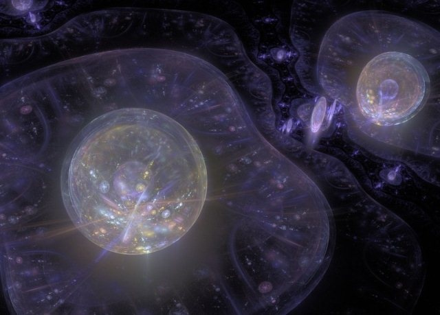

量子理論
量子理論
量子理論也被稱為量子力學或量子物理學理論，其主要重點是微觀世界的研究。
能量量化，由愛因斯坦和普朗克，和元素的原子光譜的實驗觀察提出的原理表明，當施加非常小的系統中，如原子，分子牛頓定律沒有產生正確的結果。

原子粒子量子世界。
為了解釋電子圍繞原子核創建運動 - 普朗克，玻爾，愛因斯坦和薛定諤 - 一個新的理論，量子力學。
儘管它的巨大成功，玻爾的理論有各種各樣的缺點。更複雜的原子光譜無法解釋的，產生的問題：為什麼有些光譜射線是比其他人更強烈？更重要的是，原子彼此形成穩定的系統互動？
1911年，盧瑟福提出了在電子（e）分發的帶正電的原子核，類似於圍繞太陽行星的運動中的原子模型。雖然簡單，一致的，這種模式有一個不可糾正的錯誤，因為每一個描述了一個圓周運動粒子加速。因此，通過他的方程解釋麥克斯韋，已經加速了電子應發光，直到它撞上核心逐漸失去能量。

在量子理論的微觀世界的電子位置。
玻爾，基於量化的概念，規定在其繞核軌道電子的能量也量化。即，氫原子作為有幾個可能的穩定軌道為電子，每個具有不同的能量。所以他能夠正確盧瑟福的模型。
但只有薛定諤和海森堡在1925年的工作，它是量子理論成立。薛定諤假定一個方程用於計算能量水平和在給定的區域發現的粒子的概率。

在粒子加速器轟擊後的亞原子粒子。
由牛頓定律，我們可以描述作用於他們的勢力電子（位置和速度）的運動。量子理論，反過來，計算發現在使用薛定諤方程空間的區域中的電子（或其它顆粒）的概率。
Copyright BEYTUDODEBOM.COM 2016